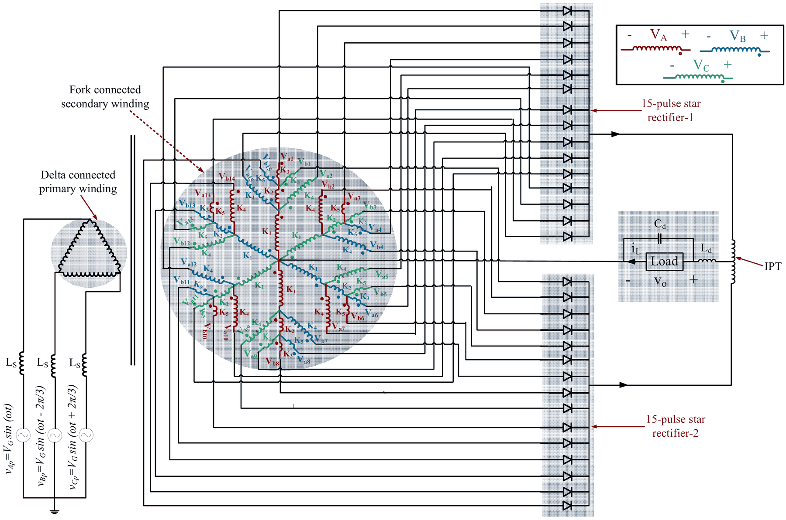
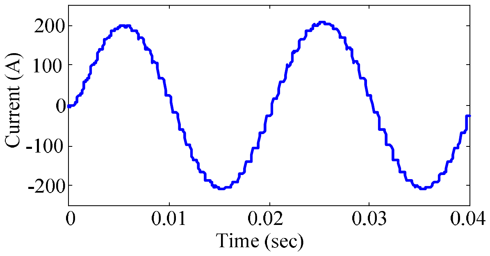
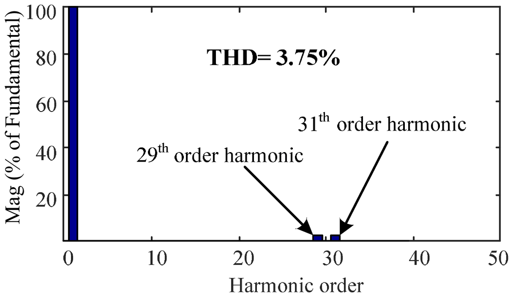
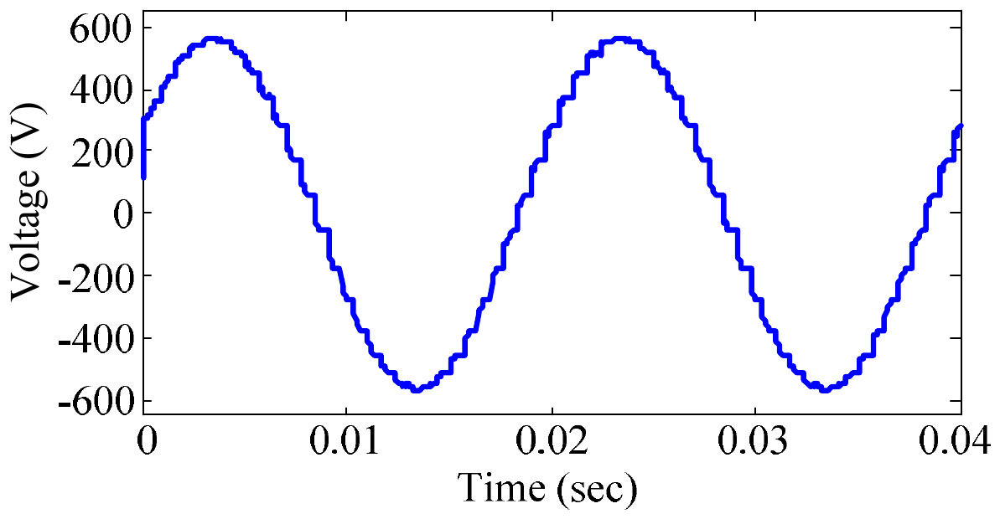
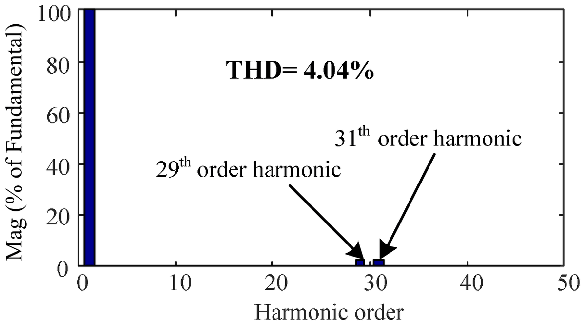

M. Z. Islam, M. A. Malek, M. A. G. Khan, and M. R. Tahmid, 4th Int. Conf. on Robotics, Electrical and Signal Processing Techniques (ICREST), Dhaka, Bangladesh, 2025, pp. 398–402.
A delta/fork transformer produces two sets of fifteen phase-shifted voltages, 12° apart. Each set feeds a 15-pulse star rectifier, and an inter-phase transformer combines the two into a 30-pulse output. Harmonics below the 29th cancel, so the input current stays within the IEEE 519 limit of 5% THD across the whole load range.





| % Load | Proposed 30-pulse | 18-pulse [9] | 12-pulse | 6-pulse | ||||
|---|---|---|---|---|---|---|---|---|
| Current THD (%) | Voltage THD (%) | Current THD (%) | Voltage THD (%) | Current THD (%) | Voltage THD (%) | Current THD (%) | Voltage THD (%) | |
| 20 | 4.77 | 1.34 | 7.69 | 1.76 | 12.05 | 2.03 | 22.75 | 2.54 |
| 40 | 4.47 | 2.58 | 7.56 | 2.64 | 11.85 | 3.34 | 22.69 | 3.76 |
| 60 | 4.30 | 3.13 | 7.31 | 3.16 | 11.42 | 4.32 | 22.65 | 5.03 |
| 80 | 4.02 | 3.52 | 7.07 | 3.52 | 11.00 | 5.30 | 22.64 | 6.22 |
| 100 | 3.75 | 4.04 | 6.72 | 4.42 | 10.70 | 6.20 | 22.46 | 7.37 |
The proposed rectifier is the only topology whose input current THD stays below the 5% IEEE 519 limit at every load level.